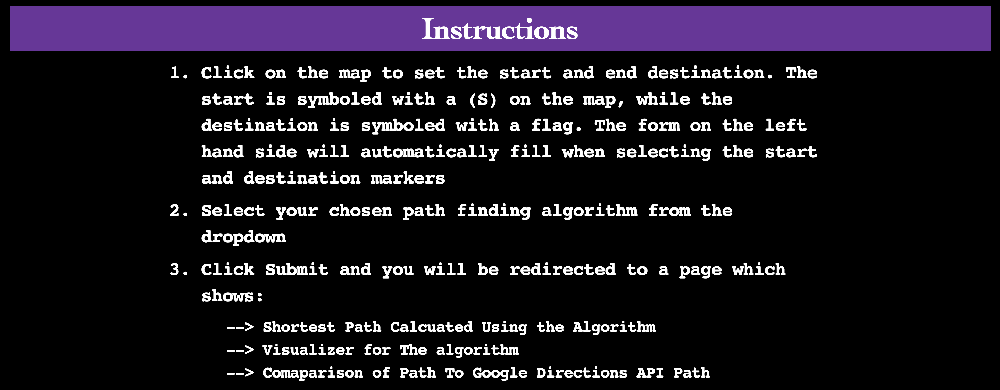
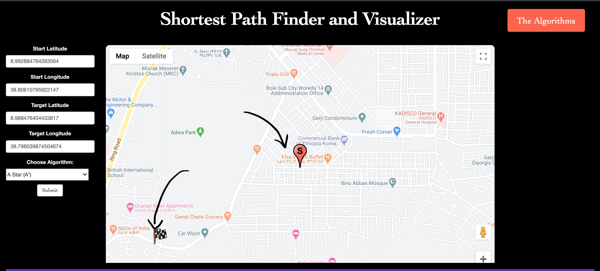
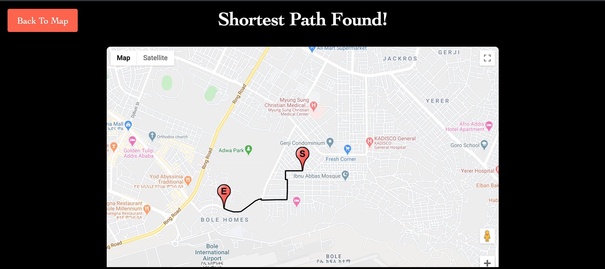
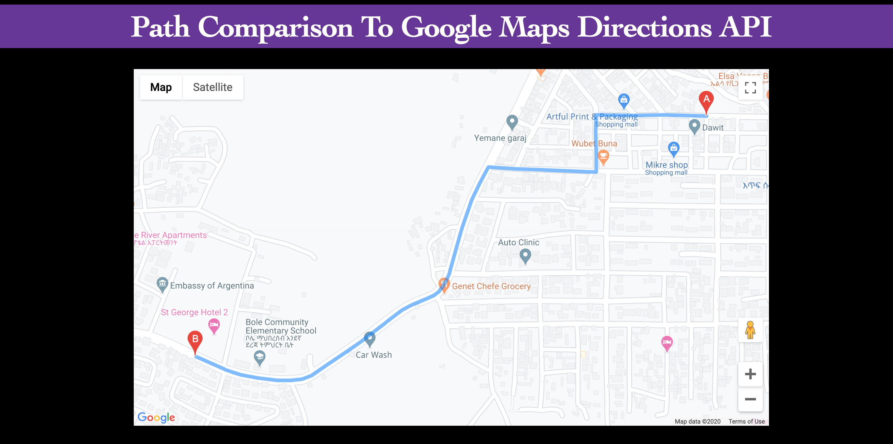
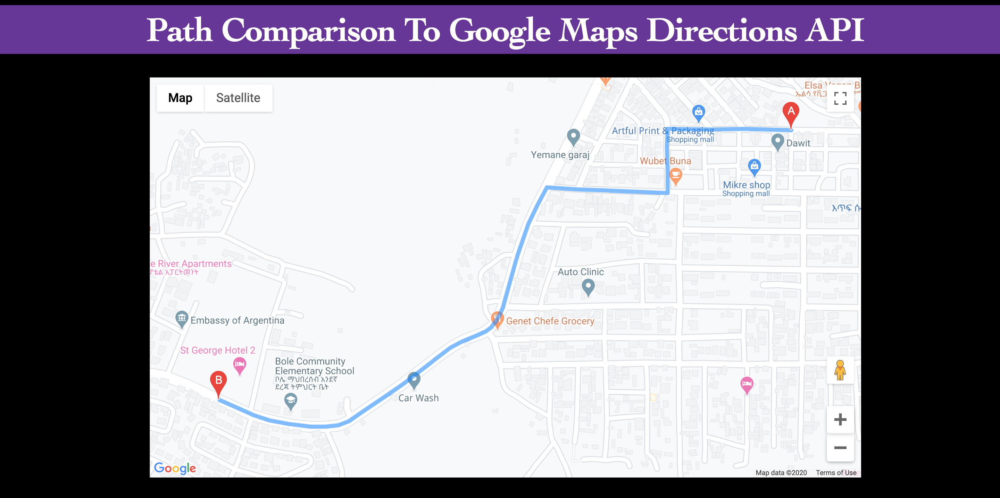

AddisMap
A shortest path finder application that uses OpenStreetMap node geodata to find the shortest path between start and destination points on a real world map using a variety of path finding algorithms. Plus a neaty visualizer for each algorithm. Built using Python web framework Django and Javascript.
Introduction
Pathfinding algorithms are an attempt to solve the shortest path problem in graph theory. They try to find the best path given a starting point and ending point based on some predefined criteria. In graph theory, the shortest path problem is the problem of finding a path between two vertices (or nodes) in a graph such that the sum of the weights of its constituent edges is minimized. I grew up in Addis Ababa, Ethiopia in the subcity Gerji. Growing up, I realized that people go around to places using landmarks such as historical buildings or statues... and nobody really uses navigation or GPS on their map. This is in stark contrast to how people move around in New York City or any developed country. I created this app initally for the area where I grew up and went to school (Gerji, Addis Ababa). I wanted to see if the shortest path that was calculated was the path my parents and I usually used.
This application allows you to set two markers on the google map API (Start, Destination). The Markers are defined by (S) for the start and a (FLAG) for the destination. The scope of the map area is in the sub city (GERJI) I grew up in. (I will add a couple other areas soon, ==> Queens, NY around St John's University and Berlin, Germany around Berlin International School) After choosing the markers, the latitude and longitude are stored and you are able to set the path finding algorithm (Breadth First Search, Depth First Search, Dijkstra, Greedy First Search, A-Star...) and it will use that algorithm for you to find the path.
Shortest Path
Helpful Visualizer
If you scroll down, you can also see a visualizer of the algorithm! I feel that the visualizers are really important for understanding how these algorithms work. You can set mazes, block walls and understand how an algorithm finds the shortest path.
 
THE DATA
The data for this map is extracted from OpenStreetMap. If you would like to work with a different part of the world/city/neighborhood, you need to extract it from OpenStreetMap and change the gerji.OSM file. If you are going to download a very metropoltian area such as New York or any other major city, just know that the most of the algorithms will take a much longer time. The Gerji.OSM file I have has over 100,000 nodes and it takes a couple seconds for the algorithm to run on the slower path finding algorithms. So just be mindful of that!